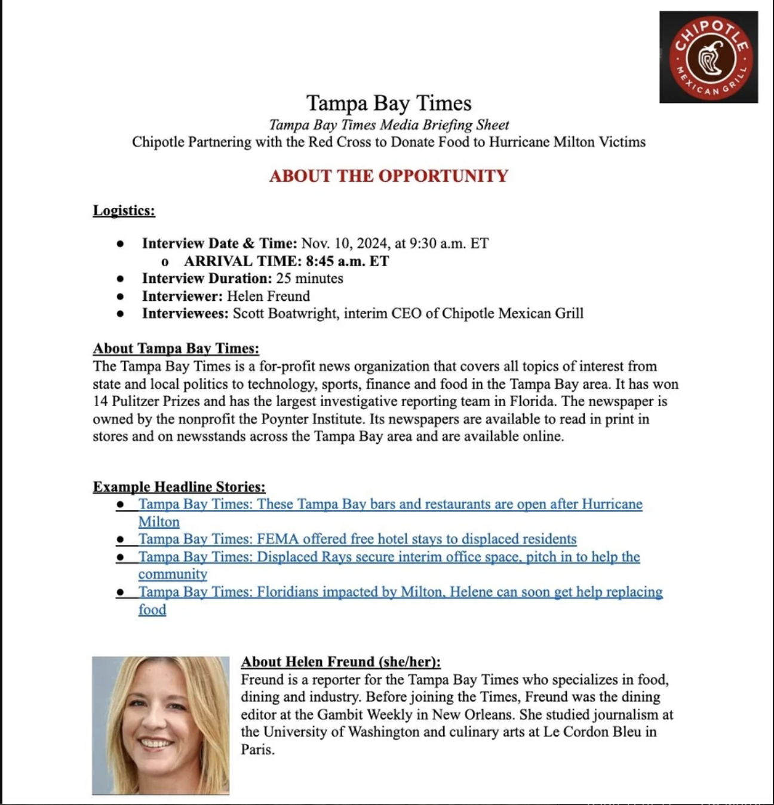
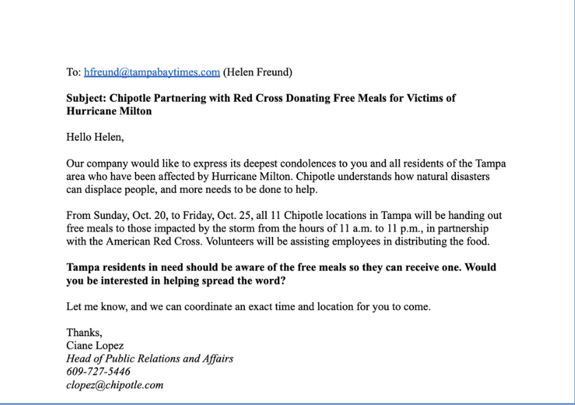
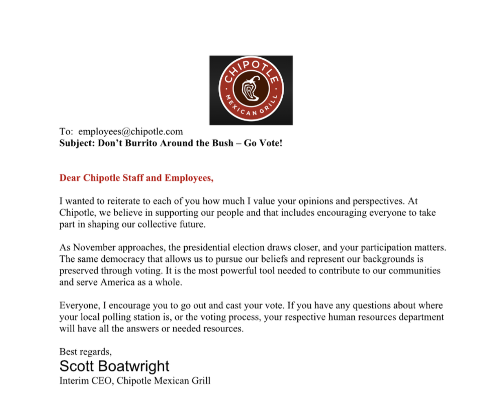

My Writing and Research Samples
The public relations industry relies on critical thinking and strategic writing. In my professional and educational experiences, I have developed press releases, written CSR statements, and news articles. I have utilized Microsoft Suite applications and Google Suite for my writing experiences. An accomplishment of mine that I have gained from my writing samples is learning to master tone and voice for each individual brand. Below are a few of my samples:
Media Brief Sample
This sample is representative of what a PR professional working in-house as the Director of Communications or in the communications office would present to an executive at the company before an interview or press event. For a class I took, focusing on writing for Public Relations, I chose to focus my samples on the company of Chipotle. A media briefing contains all the necessary details and talking points that this executive may need to know before speaking with a journalist. My example is tailored for Chipotle's CEO going into an interview with a journalist at the Tampa Bay Times.
Download Here

Media Pitch Sample
Media Pitching is an important part of a PR professional's role, as the media is something we must work in conjunction with. For a class I took, focusing on writing for Public Relations, I chose to focus my samples on the company of Chipotle. My sample above of a media pitch to a journalist is centered on a fake scenario where Chipotle will be participating in a promotional volunteering event.
Download HereInternal Executive Messaging Sample
This sample represents an example of what an HR professional would create for a CEO or executive in a company to reach out to the rest of the organization. For a class I took, focusing on writing for Public Relations, I chose to focus my samples on the company of Chipotle. Many times, HR is behind the scenes, writing these internal messages. My example is from the perspective of Chipotle's CEO reaching out to all Chipotle staff to go vote in the 2024 election.
Download Here
News Story for the Daily Orange
This sample here is from the Spring of 2024. The Daily Orange is a student-run publication at Syracuse University. In this article, I covered a DEI Symposium held by the Office of Diversity and Inclusion before the recent legal rulings.
Click Here to See the Full ArticleThese examples above are just a few of the ways I have showcased my writing capabilities. If you are interested in seeing more of my work or the possibility of me creating work for you, use the contact form to reach me, located on my home page.